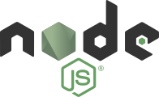
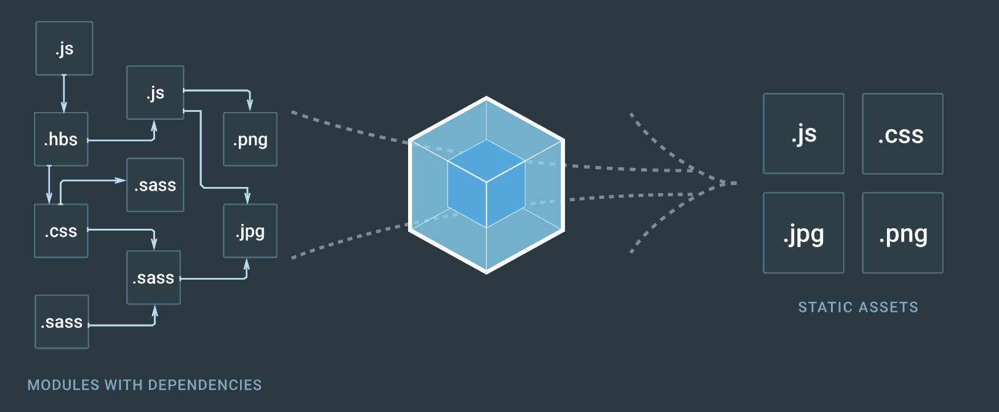
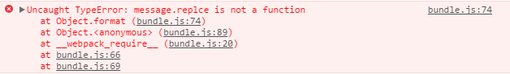
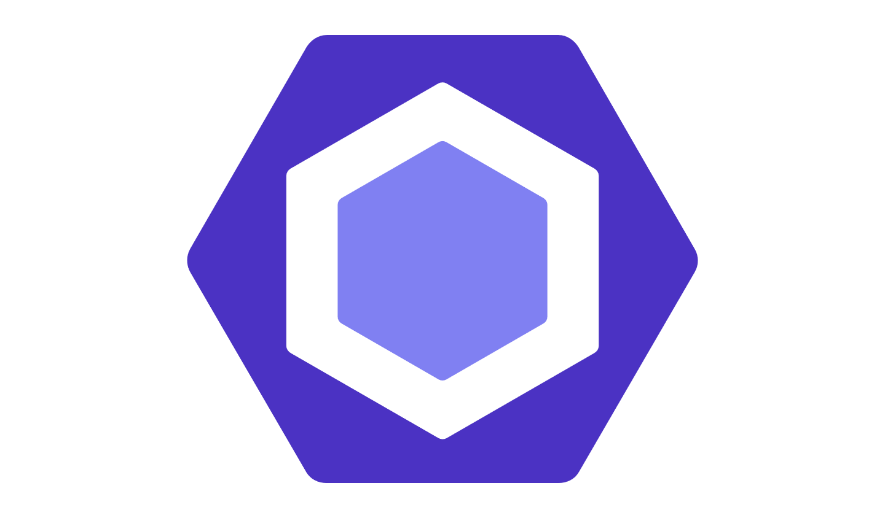
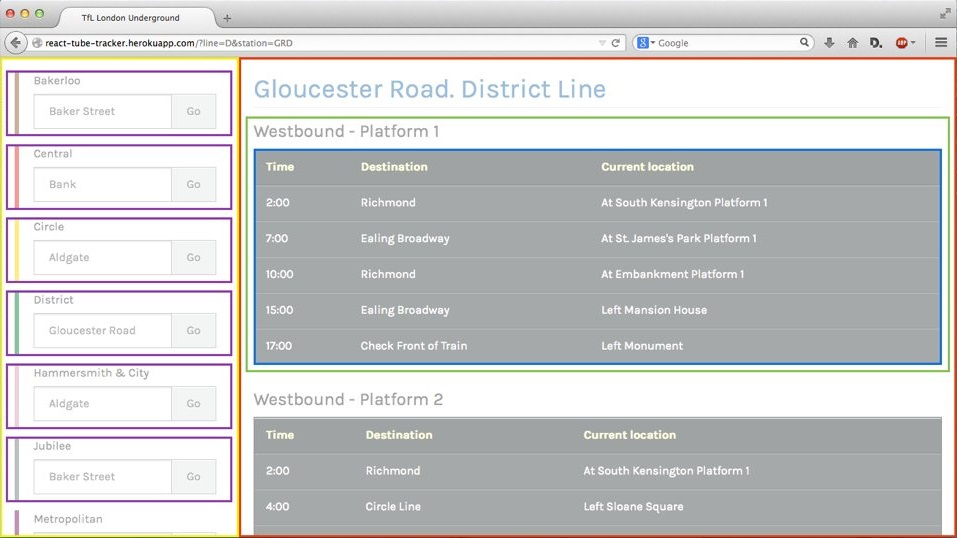

<!doctype html>
<html>
<head>
    <meta charset="utf-8">
    <meta name="viewport" content="width=device-width, initial-scale=1.0, maximum-scale=1.0, user-scalable=no">
    <link rel="stylesheet" href="reveal/css/reveal.css">
    <link rel="stylesheet" href="reveal/css/theme/kontur-light.css" id="theme">
    <!-- Theme used for syntax highlighting of code -->
    <link rel="stylesheet" href="reveal/css/highlight/idea-for-light.css">
    <link rel="stylesheet" href="reveal/css/highlight/darkula-for-dark.css">
    <!--[if lt IE 9]>
    <script src="reveal/js/html5shiv.js"></script>
    <![endif]-->
	<script defer src="reveal/js/head.min.js"></script>
	<script defer src="reveal/js/reveal.js"></script>
	<script defer src="reveal/initialize.js"></script>
	<script defer src="reveal/js/d3.min.js"></script>

    <style>
        .width25 {
            width: 25%;
        }

        .width30 {
            width: 30%;
        }

        .width40 {
            width: 40%;
        }

        .width50 {
            width: 50%;
        }

        .width75 {
            width: 75%;
        }

        .width100 {
            width: 100%;
        }

        .border {
            border: black solid 3px !important;
        }

        .flex {
            display: -webkit-box;
            display: -moz-box;
            display: -ms-flexbox;
            display: -webkit-flex;
            display: flex;
            align-items: center;
            justify-content: center;
        }
		
		.flex-column {
			flex-direction: column;
		}
		
		.flex-row {
			flex-direction: row;
		}

        .flex .row {
            width: auto;
        }

        .flex .item {
            margin: auto;
        }

		.fragment-container {
			position: relative;
		}
		
		.fragment-container .fragment {
			position: absolute;
			top: 0px;
			width: 100%;
		}
    </style>

	<script>
        function configureExternalLinks() {
            var host  = location.host.replace("www.", "");
            var hostRegExp = new RegExp(host, "i");                
            var a = document.getElementsByTagName('a');
            for (var i = 0; i < a.length; i++) {
                var href = a[i].host;
                if(!host || !hostRegExp.test(href)) {
                    a[i].setAttribute('target', '_blank');
                }
            }
        };

		function revealConfigure(defaultConfiguration) {
			return defaultConfiguration;
		}

		function revealReady(event) {
            configureExternalLinks();
		}
	</script>
	
	<title>Frontend Starter Tutorial</title>
</head>
<body>

<div class="reveal"><div class="slides"
  data-separator="^\r?\n---\r?\n$"
  data-separator-vertical="^\r?\n\*\*\*\r?\n$"
  data-attributes="\slide:\s*?(\S.+?)$"
  data-element-attributes="\$\s*?(.+?)$"
  >


<section data-markdown><script type="text/template">

<div class="flex">
    
</div>
# Frontend Starter Tutorial

---

## Как пользоваться?

- Туториал разбит на шаги. Каждый шаг -- ветка в репозитории
- После выполнения очередного шага нужно переключиться на следующую ветку
- Можно сразу перейти на интересующий шаг: не забудь выполнить `npm install` для дозагрузки зависимостей
- Чтобы увидеть все доступные этапы, посмотри на список веток `git branch` или список коммитов `git log --pretty=oneline`

<div class="flex flex-column">
    <div>__Нажми пробел!__</div>
    <div style="font-size: 80px;">&#8595;</div>
</div>

***

### Рекомендации

При прохождении туториала попробуй [Visual Studio Code](https://code.visualstudio.com/)

<div class="flex"></div>

***

### Чтобы начать

Склонируй репозиторий [frontend-starter-sandbox](https://github.com/kontur-csharper/frontend-starter-sandbox)

---

<div class="flex"></div>
## Поехали!

</script></section>

<section data-markdown><script type="text/template">
# Шаг 1

<div class="flex"><span>Переключись на ветку `step1`, чтобы продолжить</span></div>

---

## Node.js

- Node.js -- среда выполнения JavaScript с движком V8 от Google
- Она позволяет запускать JavaScript вне браузера
- Движок V8 поддерживает Just-In-Time-компиляцию JavaScript, обеспечивая высокую производительность

Разработку Node.js начал Райан Дал (англ. Ryan Dahl) в 2009 году

<div class="flex"></div>

***

1. Установи последнюю версию http://nodejs.org
2. Открой консоль и перейди в директорию этого проекта
3. Запусти `node src/index.js`

***

### В Node.js доступны различные API
- [process](https://nodejs.org/api/process.html) -- информация и контроль текущего процесса Node.js
- [console](https://nodejs.org/api/console.html) -- ввод/вывод на консоль
- [fs](https://nodejs.org/api/fs.html) -- файловая система
- [path](https://nodejs.org/api/path.html) -- построение путей в разных ОС
- [os](https://nodejs.org/api/os.html) -- особенности ОС
- [http](https://nodejs.org/api/http.html) -- http клиент и сервер
- и [другие](https://nodejs.org/api/)

[Набор свойств](https://nodejs.org/api/globals.html) глобального объекта Node.js отличается от такового в глобальном объекте `window` браузера

---

## Модули

Модули на уровне языка появились только в стандарте ES2015

Поэтому программисты выкручивались разными способами:
- Шаблон [Модуль](https://learn.javascript.ru/closures-module), использующий замыкание
- _AMD_ (Asynchronous Module Definition) -- шаблон модуля, позволяющий загружать модули асинхронно. Использует функцию require
- _CommonJS_ -- шаблон модуля с синхронной загрузкой модулей. Стал популярен благодаря Node.js
- _UMD_ -- модуль в таком формате можно подключить и в CommonJS-модуле, и в AMD-модуле

[Обзор](https://habrahabr.ru/company/yandex/blog/192874/#es2015-modules-2015) эволюции модулей в JavaScript 

***

### Модули в Node.js

1. Изучи файлы `src/index.js`, `src/emoji.js`

Так создаются и используются модули в Node.js  
Шаблон описания называется _CommonJS_

***

### Модули ES2015

А так выглядят модули согласно стандарту ES2015
```js
// calculator/main.js
// calculator/lib/calc.js
let notExported = 'abc';
export function square(x) {
    return x * x;
}
export const MY_CONSTANT = 123;

// calculator/main.js
import { square } from 'lib/calc';
console.log(square(3));
```

***

Модуль может экспортировать что-то по умолчанию
```js
// myapp/models/Customer.js
export default class { // анонимный класс
    constructor(id, name) {
        this.id = id;
        this.name = name;
    }
};

// myapp/myapp.js
import Customer from 'models/Customer';
let customer = new Customer(0, 'Jane');
```

***

#### Обрати внимание

- При импорте _дефолтных_ значений, функций или классов из файла, фигурные скобки указывать не надо
- При импорте _недефолтных_ значений, импорт содержит фигурные скобки

[Статья](https://developer.mozilla.org/ru/docs/Web/JavaScript/Reference/Statements/import) о синтаксе импортов


---

## Node Package Manager

- Пакетный менеджер для Node.js
- Содержит свыше 280 000 пакетов
- Устанавливается вместе с Node.js

<div class="flex"></div>

***

### Semantic Versioning

Пакеты в npm получают версии, согласно [семантическому версионированию](http://semver.org/)

Пример версии -- `2.11.165-beta`

В номере версии `MAJOR.MINOR.PATCH` увеличивается
- MAJOR-версия, при добавлении несовместимых изменений API
- MINOR-версия, при добавлении функциональности с сохранением обратной совместимости
- PATCH-версию, при исправлении багов

Можно добавлять метки для предрелизов и метаинформации

***

1. В корневой папке выполни `npm init`. Соглашайся на все значения по умолчанию. В результате npm создаст файл с конфигурацией пакета -- `package.json`
2. Установи пару пакетов с указанием версии `npm install mocha@3.2 chai@3.5 --save-dev` --
эти библиотеки вскоре понадобятся
3. Загляни в папку `node_modules` -- там установленные модули
4. Список зависимостей от других пакетов хранится в `package.json`. Убедись, что `package.json` зафиксирована зависимость от установленных пакетов

***

Разделы `package.json`, отвечающие за зависимости
- `dependencies` -- пакеты, которые нужны всегда. При установке добавляем флаг `--save`
- `devDependencies` -- пакеты, которые нужны только для разработки. При установке добавляем флаг `--save-dev`
- `peerDependencies` -- требования к другим зависимостям. Так пакет с плагином для jQuery может потребовать, чтобы его устанавливали только вместе с jQuery 3.0 и выше

***

Пакеты можно устанавливать в папку с проектом
```bash
npm install mocha
```

или глобально в вашу систему — они попадут в `%APPDATA%\npm\node_modules`
```bash
npm install mocha -g
```

***

В реальной разработке, если проект не новый, то все нужные пакеты уже записаны в package.json.

Остается только запустить команду `npm i` (это краткая запись для `npm install`) и все зависимости из package.json
установятся с указанными версиями библиотек

[Подробности](https://docs.npmjs.com/) про npm и package.json

---

## Unit-тестирование

Две библиотеки для unit-тестирования:
[mocha](https://mochajs.org/) и [chai](http://chaijs.com/) -- уже установлены

Mocha — фреймворк для unit-тестирования, он запускает тесты и предоставляет методы для их описания (такие как
describe и it).

Chai — библиотека ассертов. С помощью chai можно писать более человекочитаемые тесты. Например:
`expect(tea).to.have.property('flavors')`

<div class="flex"></div>

***

### Запуск тестов

1. Изучи файл `tests/emojiSpec.js`
2. Запусти тесты с помощью mocha
`node node_modules\mocha\bin\mocha tests\*`

***

### Быстрый запуск

1. Настрой запуск тестов через npm, чтобы не писать каждый раз длинную команду
```js
//Поправь в package.json
"scripts": { "test": "mocha tests/* & exit 0" }
```
2. А теперь запусти тесты из консоли командой `npm test`
3.  Заметь, что в скриптах npm можно не указывать путь до mocha:  
  - npm догадается, что mocha -- это пакет из node_modules
  - в package.json пакета mocha указано какой из скриптов выполнять по умолчанию

***

### Больше тестов

1. Создай тест, проверяющий замену нескольких смайликов
2. Запусти `npm test`
3. Тест должен упасть
4. Почини тест (добавь флаг `g` в регулярном выражении в файле emoji.js)

---

## Результаты шага 1

1. Node.js позволяет выполнять JavaScript вне браузера
2. Модули CommonJS используется в Node.js
3. В стандарт ES2015 добавлены модули  
4. NPM -- пакетный менеджер Node.js  
  - Устанавливает пакеты
  - Отслеживает зависимости
  - Позволяет создавать сокращения для команд
5. Библиотеки Mocha и Should позволяют писать unit-тесты

<div class="flex"><span>Итоговый код в ветке `step1-finished`</span></div>

</script></section>


<section data-markdown><script type="text/template">
# Шаг 2

<div class="flex"><span>Переключись на ветку `step2`, чтобы продолжить</span></div>

---

## Webpack

Модули -- это прекрасно!  
Но как потом их использовать на html-страницах?

1. Попробуй открыть `index.html` в браузере
2. Открой Dev Tools (F12) -- вкладка Console показывает ошибку `"require is not defined"`

`require` определен только в Node.js.  
Браузеры ничего не знают про него.  
Эту проблему решает _Webpack_

<div class="flex"></div>

***

### Webpack -- это сборщик модулей

<div class="flex"></div>

<div class="flex" style="text-align: center">
    <div class="item">удобная при разработке<br>модульная структура</div>
    <div class="item" style="font-size: 60px;">➔</div>
    <div class="item">несколько файлов<br>для браузера</div>
</div>

***

### Точки расширения Webpack

- _loaders_ позволяют подавать на вход файлы различных форматов:
  - написаны для популярных форматов
  - e.g. компиляция в JavaScript
  - e.g. компиляция less, saas, stylus в css
- _plugins_ управляют дальнейшими преобразованиями:
  - минимизация
  - объединение множества файлов в один
  - разделеление на бандлы ("куски кода", например, бандл со всеми библиотеками или бандл с кодом для какой-то одной
страницы)
- _конфигурирование_ для разных окружений:
  - разработки
  - тестирования
  - продакшена

***

### Использование Webpack

1. Выполни `npm i`: в package.json уже добавлены все нужные пакеты
2. Создай в корне файл `webpack.config.js` по [документации](https://webpack.js.org/guides/get-started/#using-webpack-with-a-config)
  - в `entry` укажи `./src/index.js`
  - в `output.filename` -- `bundle.js`
  - в `output.path` -- `path.resolve(__dirname, 'build')`
3. Создай еще один скрипт в packages.json для запуска webpack
```js
//Добавь в package.json
"scripts": { "build": "webpack & exit 0" }
```
4. Выполни `npm run build`. После этой команды в папке `build` должен появиться `bundle.js`. Можешь открыть и изучить его устройство.
5. Подключи в html-файле `build/bundle.js` вместо `index.js` и открой `index.html` в браузере
6. Все должно сработать!

***

### Отладка

1. Код в браузере, как и любой другой нуждается в отладке. Чтобы посмотреть, как выглядят ошибки и как их отладить, в
файле `emoji.js` соверши опечатку в слове `replace`
2. Пересобери проект командой `npm run build`
3. В браузере, на вкладке с index.html открой инструменты разработчика (клавиша `F12`, [обзор Chrome
DevTools](https://developers.google.com/web/tools/chrome-devtools/))
4. Перезагрузи вкладку index.html с открытыми инструментами разработчика
5. На вкладке Console должна появиться ошибка
<div class="flex"></div>
6. Если кликнуть на ссылку с названием файла и номером строки (в моем случае это `bundle.js:74`), то браузер покажет
эту строку на вкладке Source


***

### Замечание

При разработке этого курса в качестве браузера использовался Google Chrome. Если ты предпочитаешь другой браузер,
узнай о том, как пользоваться в нем инструментами разработчика самостоятельно.

***

### Source Map

Отлаживать непонятный bundle.js в браузере неприятно. Поэтому сгенерируй sourcemap

1. Для этого в  `webpack.config.js` добавь  
поле `devtool: "source-map"` в объект конфигурации
2. Запусти еще раз `npm run build`. Должен появиться файл `build/bundle.js.map`
3. В браузере на вкладке Sources в Dev Tools должны появиться отдельные js модули.
4. Теперь из ошибки в консоли можно попасть прямо в код исходного файла. Попробуй!
5. Теперь можно пофиксить ошибку

[Полная документация по Webpack](https://webpack.js.org/)

---

## Dev-Server

Dev-Server -- это сервер, удобный при разработке

Он может автоматически перезапускать сборку webpack'ом
и перезагружать страницу при изменении исходных файлов

Воспользуемся им!

***

1. В файле `webpack.config.js` дополни конфигурацию `output`:
    ```js
    // Дополни output в webpack.config.js
    publicPath: 'build'
    ```
1. Добавь скрипт start в package.json для запуска webpack-dev-server
    ```js
    // Добавь в package.json
    "scripts": { "start": "webpack-dev-server" }
    ```
2. `npm run start` и открой в браузере http://localhost:8080
3. Поменяй что-нибудь в исходниках и посмотри как ведет себя dev-server

---

## Babel

Браузеры и даже Node.js часто не знают новомодных фич ES2015 и более поздних версий.
Можно ли их использовать?

Можно с помощью [Babel](https://babeljs.io/),  
превращающего новый JS в старый

Babel -- это _транспайлер_  
Это как компилятор, только структура программы не меняется

<p class="center" style="width: 30%; margin:auto;">
	
</p>

***

### Конфигурация Babel

1. Команда `npm i`
установила _babel-loader_ в Webpack, и набор настроек (_preset_)
к нему, чтобы понимать все новинки ES2015
2. Допиши в webpack.config.js
    ```js
    module: {
        rules: [
            { test: /\.js$/, exclude: /node_modules/, use: ["babel-loader"] }
        ]
    }
    ```
3. Создай файл `.babelrc` в корне проекта, в нем надо указать установленный пресет:
    ```js
    {
        "presets": ["es2015"]
    }
    ```
Подробности об использовании Babel с разными библиотеками: https://babeljs.io/docs/setup/#installation

***

### Использование Babel
1. Воспользуйся новинкой ES2015 в коде, чтобы посмотреть, как работает babel
    - Поменяй вызовы `require` и `module.exports` на новые
        [import](https://developer.mozilla.org/ru/docs/Web/JavaScript/Reference/Statements/import) и
        [export](https://developer.mozilla.org/ru/docs/Web/JavaScript/Reference/Statements/export)
    - Посмотри, в какой код это превратилось внутри bundle.js
    - Проверь, что все работает в браузере
4. Запусти тесты -- они перестали работать, потому что Node.js еще не поддерживает новый синтаксис import/export.
5. Как запускать babel еще и перед тестами посмотри в [документации](https://babeljs.io/docs/setup/#installation)
    - выбери _Mocha_ в первом пункте
    - нужно только _поправить команду_ в script

***

### Babel Presets

_Пресет_ -- набор правил преобразования

- Для разных версий языка: _es2015_, _es2016_, _es2017_
- Поддержка наборов фич, предложенных комитету [TC-39](https://github.com/tc39/proposals):  
_stage-0_, _stage-1_, _stage-2_, _stage-3_
- Синтаксический сахар библиотек: _react_, _flow_
- С конкретными фичами: _es2015-modules-commonjs_,  
_es2015-arrow-functions_

[Здесь](https://babeljs.io/docs/plugins/) можно посмотреть список пресетов

А в [песочнице](https://babeljs.io/repl/#?evaluate=true&presets=es2015%2Creact%2Cstage-2) можно поиграться с разными пресетами

---

## Результаты шага 2

1. Webpack собирает из множества модулей несколько файлов, для подключения в браузере
2. Dev-Server обеспечивает пересборку, при внесении изменений
3. Babel делает доступными новейшие фичи языка
  - есть готовые пресеты, но можно написать свой
  - подключается отдельно: для браузера, для тестов, для Node.js

<div class="flex"><span>Итоговый код в ветке `step2-finished`</span></div>

</script></section>


<section data-markdown><script type="text/template">
# Шаг 3

<div class="flex"><span>Переключись на ветку `step3`, чтобы продолжить</span></div>

---

## ESLint

<div class="flex">Конфигурируемая статическая проверка кода</div>

<div class="flex"></div>

***

### Конфигурирование проверок

ESLint поставляется с коллекцией проверок

Кроме того, можно установить плагины с дополнительными проверками, либо написать свои

По умолчанию все проверки выключены -- можно включать только нужные

ESLint поддерживает разные форматы конфигурирования:
- .eslintrc.json // с поддержкой комментариев
- .eslintrc.js
- .eslintrc.yaml
- Поле "eslint" в package.json

***

1. Выполни `npm i`, чтобы установить новые пакеты: `eslint@3.8`, `eslint-plugin-import@2.0`, `eslint-loader@1.6`
2. Изучи файл `.eslintrc.json` с конфигурацией проверок ([документация
ESLint](http://eslint.org/docs/user-guide/configuring))
3. Настрой запуск ESLint через npm
```js
// Добавь в package.json
"scripts": { "lint": "eslint . & exit 0" }
```
4. Выполни `npm run lint` -- ESLint сообщит об ошибках

***

### Игнорирование

Возможный источник ошибок -- проверка ненужных файлов:
- чужого кода в node_modules
- результатов сборки
- специфичных файлов


1. Изучи файл `.eslintignore` -- в нем описываются правила игнорирования при проверке
2. Добавь в него строчку `build/*`, чтобы результаты сборки не проверялись
3. Выполни `npm run lint` -- не должно быть ошибок в папке build

***

### Указание среды выполнения

Одна из ошибок -- `'describe' is not defined` в тестах

ESLint не знает, что код теста будет выполняться mocha и describe будет определен

1. Добавь mocha в поле `"env"` в `.eslintrc.json`
```json
"env": {
    "mocha": true
}
```
2. Выполни `npm run lint` -- не должно остаться ошибок!

***

### Проверки при построении

1. Добавь дополнительный loader для JavaScript в `webpack.config.js`. Порядок лоадеров имеет значение!
```js
rules: [
    {
      test: /\.js$/, exclude: /node_modules/, use: ["babel-loader", "eslint-loader"]
    }
]
```
2. Посмотри, как выглядят ошибки при сборке. Добавь в начало `emoji.js` эти строчки
```js
/*eslint no-console*/
console.log();
```
3. Запусти `npm run build` и получи ошибку при построении!
4. Обрати внимание! Способ запуска ESLint теперь другой, а конфигурация используется та же: из `.eslintrc.json`

***

### Проверки при написании кода

Чтобы ошибки проверялись при написании кода надо подключить ESLint к твоей любимой IDE

Тебе повезло, если твоя любимая IDE -- это _Visual Studio Code_.
Просто скачай расширение [ESLint](https://marketplace.visualstudio.com/items?itemName=dbaeumer.vscode-eslint) и все заработает.

Поищи в Settings по фразе ESLint и поставь 1 галочку, чтобы включить ESLint в _WebStorm_

Скорее всего в других средах разработки на JS сложность такая же

_Enjoy ;-)_

---

## Результаты шага 3

ESLint статически проверяет код, при этом
  - гибко конфигурируется
  - сообщает об ошибках при построении
  - встраивается в среды разработки

<div class="flex"><span>Итоговый код в ветке `step3-finished`</span></div>

</script></section>


<section data-markdown><script type="text/template">
# Шаг 4

<div class="flex"><span>Переключись на ветку `step4`, чтобы продолжить</span></div>

---

## Компонентный подход в UI

***

### HTML был создан для документов...

<div class="flex"></div>

__... а не для разработки приложений__

***

#### Стили

_CSS_ -- позволил менять тему оформления

Темы удобно хранить в отдельных файлах и переиспользовать

#### Сценарии

_JS_ -- добавил элементарные действия

Хранение скриптов в отдельных файлах ~~отделяет мух от котлет~~ правильно с точки зрения хорошего дизайна

***

### Компоненты

Приложения удобно собирать из более крупных кирпичиков, чем теги HTML: один раз описываешь логику -- много раз используешь

<div class="flex"></div>

***

_Компонент_ -- это кирпичик, совмещающий разметку, стили и логику, а также использующий другие компоненты

Разделение UI на компоненты десятилетиями применяется в десктопных приложениях.
Было создано множество библиотек и даже специальный язык разметки -- XAML

Компонентный подход пришел в веб вместе с веб-приложениями и реализуется во многих фреймворках:
- Angular
- Ember
- Knockout
- React
- Vue

---

## React

Библиотека от Facebook для реализации View из паттерна MVC

[Документация](https://facebook.github.io/react/docs/hello-world.html) React ([на русском](https://abraxabra.ru/react.js/bystryy-start/))

[Краткое описание](http://siteacademy.ru/jquery/reactjs-overview)

<div class="flex"></div>

***

1. `npm i` -- в package.json добавлены React, его пресет для Babel и плагин для ESLint: они требуются для поддержки языка jsx и самого React
2. Подключи пресет `react` в `.babelrc`
3. Измени `module` в `webpack.config.js` так, чтобы jsx-файлы тоже обрабатывались Babel.
Там же поменяй `entry` на index.jsx
4. Подключи плагин `react` в `.eslintrc.json` и включи новые правила
```js
// Добавь дополнительное значение в массив extends
"extends": ["plugin:react/recommended"]
// Настрой одно из правил
"react/prop-types": ["error", { "skipUndeclared": true }]
// Добавь поддержку jsx
"parserOptions": { "ecmaFeatures": { "jsx": true } }
```
5. Собери проект, все должно заработать!

***

1. Изучи App.jsx и MessageList.jsx
  - Так определяются React-компоненты на языке jsx
  - Babel с пресетом react умеет превращать jsx в js
2. Изучи index.jsx -- так компонент можно рендерить в html

---

## Стили компонентов

Компонентный подход предлагает носить стили рядом с компонентами. Как это делать?

***

1. Команда `npm i` установила пакеты для загрузки стилей: css-loader и style-loader
2. В webpack.config.js в массив rules добавь такой объект:
```js
{ test: /\.css$/, use: ["style-loader", "css-loader?modules"] }
```
3. Раскомментируй подключение подготовленного файла стилей в MessageList.jsx
4. В MessageList.jsx измени класс message у div на такой:
```html
<div className={styles.message} .../>
```
5. Собери проект и изучи стили в инспекторе браузера:
  - Имена классов "испортились", чтобы гарантированно не конфликтовать с одноименными классами других компонентов
6. Вынеси код рендеринга одного сообщения в отдельный React компонент Message.jsx

---

## Результаты шага 4

1. Удобно разбивать UI веб-приложений на компоненты
2. Компонент -- объединяет разметку, стили и логику  
Все составные части компонента находятся в одной папке
3. React и Webpack позволяет использовать компонентный подход

<div class="flex"><span>Итоговый код в ветке `step4-finished`</span></div>

</script></section>

<section data-markdown><script type="text/template">

# Шаг 5

<div class="flex"><span>Переключись на ветку `step5`, чтобы продолжить</span></div>

---

## Material-UI

Набор готовых React-компонент, реализующих стиль Material Design

<div class="flex"></div>

> Когда хочется красиво, а верстать не хочется --  
> можно не верстать
>  
> Один опытный бэкендер

***

1. `npm i` поставит библиотеку material-ui
2. Изучи App.jsx -- там пример использование компонента [AppBar](http://www.material-ui.com/v0.16.7/#/components/app-bar)
3. Переведи MessageList на использование компонента List внутри Card, а Message -- на использование [ListItem](http://www.material-ui.com/v0.16.7/#/components)
4. Создай еще один компонент MessageBox.jsx с [полем ввода](http://www.material-ui.com/v0.16.7/#/components/text-field) и [кнопкой
Send](http://www.material-ui.com/v0.16.7/#/components/raised-button)
5. Сделай так, чтобы MessageBox по нажатию Send вызывал функцию onSend, переданную ему в пропсах из MessageList. Как
обрабатывать клики прочитай [тут](https://abraxabra.ru/react.js/bystryy-start/react-js-obrabotka-sobytiy/). Как
передавать свойства читай [тут](https://abraxabra.ru/react.js/bystryy-start/react-js-komponenty-i-svoystva/)
6. MessageList должен просто передать в MessageBox функцию onSend, которую сам получит от App.
6. Заставь App при вызове функции onSend делать так, чтобы новое сообщение появлялось в списке. Как обновлять стейт
написано [тут, раздел "Правильное использование состояния"](https://abraxabra.ru/react.js/bystryy-start/react-js-sostoyanie-i-zhiznennyy-tsikl/)

---

## Результаты шага 5

1. Для React доступны библиотеки готовых компонент.  
Material-UI -- одна из них

<div class="flex"><span>Итоговый код в ветке `step5-finished`</span></div>

</script></section>

<section data-markdown><script type="text/template">

## Продолжение следует...

</script></section>


</div></div>
</body>
</html>
